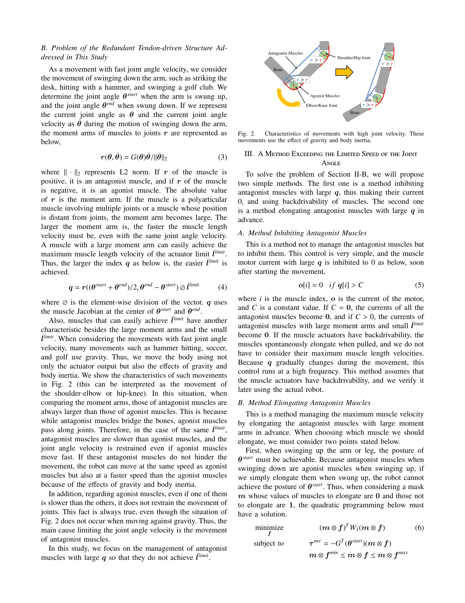

저자: Kento Kawaharazuka, Yuya Koga, Kei Tsuzuki, Moritaka Onitsuka, Yuki Asano, Kei Okada, Koji Kawasaki, Masayuki Inaba | 날짜: 2025-02-18 | URL: https://arxiv.org/abs/2502.12808

Fig. 2.
중복 힘줄 구동 구조를 가진 근골격 인간형 로봇에서 가장 느린 근육에 의해 제한되는 관절 각속도 한계를 초과하는 두 가지 방법을 제안하고 실제 로봇 실험으로 검증한다.
Fig. 2.
총평: 근골격 인간형 로봇의 구동 제약을 새로운 관점에서 분석하고, 실용적이면서도 독창적인 두 가지 해결 방법을 제시했다. 실제 로봇 실험 검증을 통해 이론의 타당성을 입증했으나, 시뮬레이션의 단순화와 적용 조건의 제한이 개선될 여지가 있다.